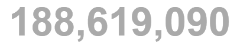

STATISTICS
Total Cases :
+510,380
Deaths :
+8,117
Recovered :
+30,869
Last updated: July 14, 2021, 05:47 GMT


+510,380
+8,117
+30,869
Last updated: July 14, 2021, 05:47 GMT
Infection with the new coronavirus (severe acute respiratory syndrome coronavirus 2, or SARS-CoV-2) causes coronavirus disease 2019 (COVID-19). The virus that causes COVID-19 spreads easily among people, and more continues to be discovered over time about how it spreads. Data has shown that it spreads mainly from person to person among those in close contact (within about 6 feet, or 2 meters). The virus spreads by respiratory droplets released when someone with the virus coughs, sneezes, breathes, sings or talks. These droplets can be inhaled or land in the mouth, nose or eyes of a person nearby. In some situations, the COVID-19 virus can spread by a person being exposed to small droplets or aerosols that stay in the air for several minutes or hours — called airborne transmission. It's not yet known how common it is for the virus to spread this way. It can also spread if a person touches a surface or object with the virus on it and then touches his or her mouth, nose or eyes, but the risk is low. Some reinfections of the virus that causes COVID-19 have happened, but these have been uncommon.
Risk factors for COVID-19 appear to include:
Although most people with COVID-19 have mild to moderate symptoms, the disease can cause severe medical complications and lead to death in some people. Older adults or people with existing medical conditions are at greater risk of becoming seriously ill with COVID-19. Complications can include:
The U.S. Food and Drug Administration (FDA) has given emergency use authorization to some COVID-19 vaccines in the U.S. A vaccine can prevent you from getting the COVID-19 virus or prevent you from becoming seriously ill if you get the COVID-19 virus. Also, if you are fully vaccinated, you can return to many activities you may not have been able to do because of the pandemic — including not wearing a mask or social distancing — except where required by a rule or law. If you are fully vaccinated and have a condition or are taking medications that weaken your immune system, you may need to keep wearing a mask. If you haven’t had the COVID-19 vaccine, you can take many steps to reduce your risk of infection. WHO and CDC recommend following these precautions for avoiding exposure to the virus that causes COVID-19:
If you're planning to travel, first check the CDC and WHO websites for updates and advice. Be prepared to wear a mask and use appropriate hand hygiene when in public. You may also want to talk with your doctor if you have health conditions that make you more susceptible to respiratory infections and complications.